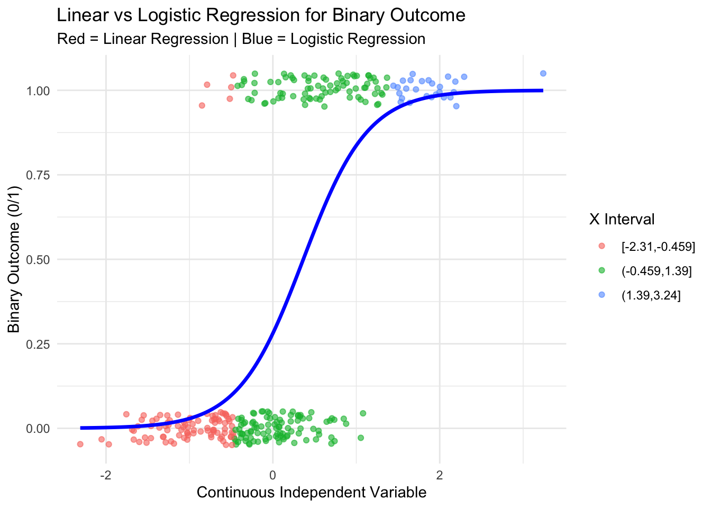
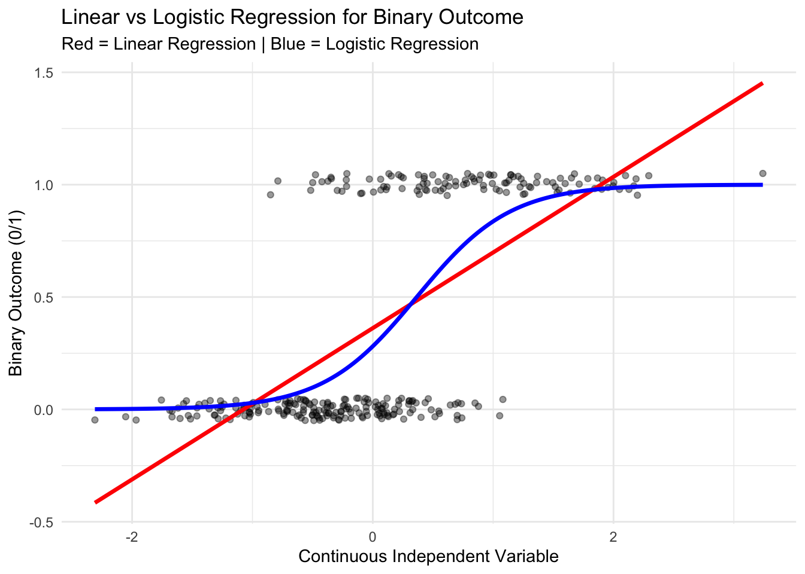
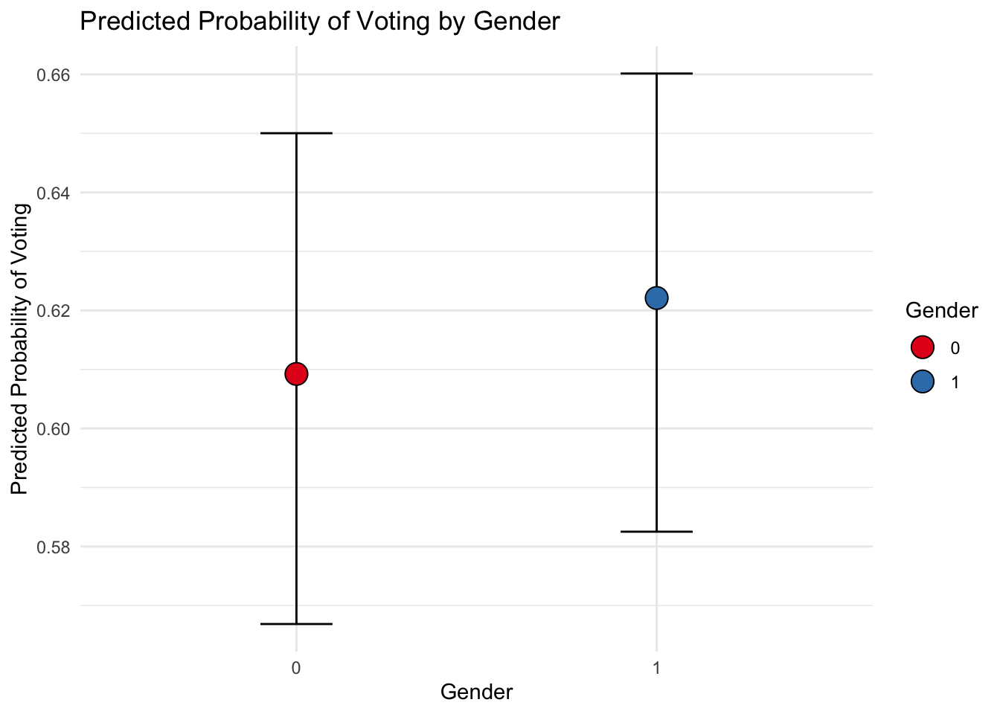
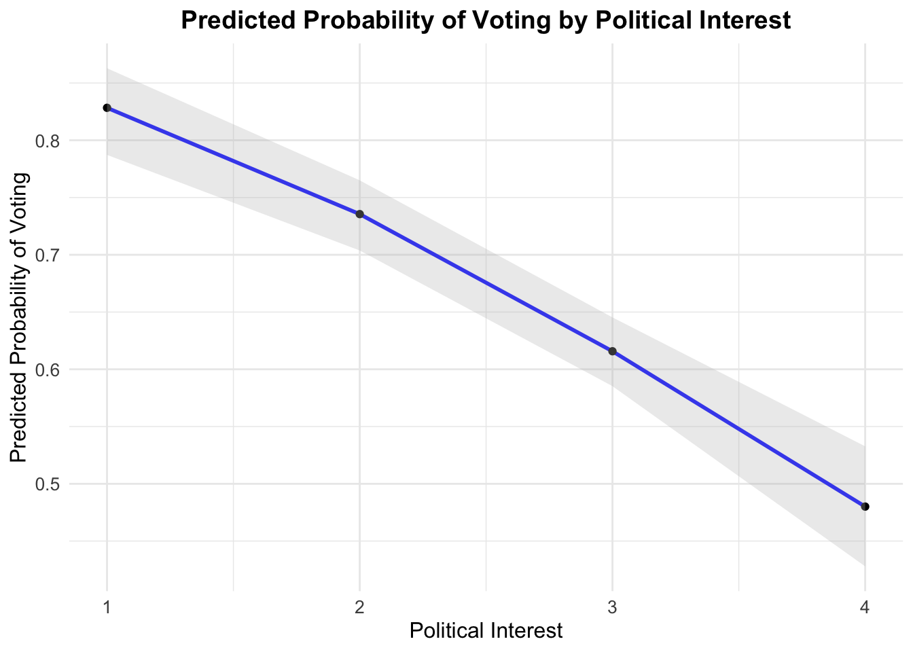

Many dependent variables are binary in political science…
Eg. turnout, voting at the individual level
An example
Rovny’s
interest in outsiderness and occupational structure as variables explaining voting (political sociology)
Dependent Variable = voting at the individual level: binary
IV = different definitions of ‘outsiderness’ in the labour market, depending on individual characteristics (continuous metric)
An example
Results for right voting
how do you get to predicted probabilities ?
Your scatter plot
# Load necessary library# Load necessary librarylibrary(ggplot2)set.seed(123)# Simulate continuous independent variablen <-300x <-rnorm(n, mean =0, sd =1)# Create probability using logistic functiontrue_prob <-1/ (1+exp(-( -1+2*x )))# Generate binary outcomey <-rbinom(n, size =1, prob = true_prob)data <-data.frame(x = x, y = y)# Fit modelslinear_model <-lm(y ~ x, data = data)logit_model <-glm(y ~ x, data = data, family = binomial)# Create prediction gridx_seq <-seq(min(x), max(x), length.out =200)pred_data <-data.frame(x = x_seq)pred_data$linear_pred <-predict(linear_model, newdata = pred_data)pred_data$logit_pred <-predict(logit_model, newdata = pred_data, type ="response")# Plotggplot(data, aes(x = x, y = y)) +geom_jitter(height =0.05, alpha =0.4) +labs(title ="Linear vs Logistic Regression for Binary Outcome",subtitle =" ",x ="Continuous Independent Variable",y ="Binary Outcome (0/1) - (e.g. voting)") +theme_minimal()
A linear regression
# Load necessary library# Load necessary librarylibrary(ggplot2)set.seed(123)# Simulate continuous independent variablen <-300x <-rnorm(n, mean =0, sd =1)# Create probability using logistic functiontrue_prob <-1/ (1+exp(-( -1+2*x )))# Generate binary outcomey <-rbinom(n, size =1, prob = true_prob)data <-data.frame(x = x, y = y)# Fit modelslinear_model <-lm(y ~ x, data = data)logit_model <-glm(y ~ x, data = data, family = binomial)# Create prediction gridx_seq <-seq(min(x), max(x), length.out =200)pred_data <-data.frame(x = x_seq)pred_data$linear_pred <-predict(linear_model, newdata = pred_data)pred_data$logit_pred <-predict(logit_model, newdata = pred_data, type ="response")# Plotggplot(data, aes(x = x, y = y)) +geom_jitter(height =0.05, alpha =0.4) +geom_line(data = pred_data, aes(y = linear_pred), color ="red", size =1.2) +labs(title ="Linear vs Logistic Regression for Binary Outcome",subtitle ="Red = Linear Regression | Blue = Logistic Regression",x ="Continuous Independent Variable",y ="Binary Outcome (0/1)") +theme_minimal()
Warning: Using `size` aesthetic for lines was deprecated in ggplot2 3.4.0.
ℹ Please use `linewidth` instead.
A linear regression
Violates several assumptions about linear models
Heteroskedastic
Irrelevant
But there are probabilities…
Take different intervals of X
library(ggplot2)set.seed(123)# Simulate continuous independent variablen <-300x <-rnorm(n, mean =0, sd =1)# Create probability using logistic functiontrue_prob <-1/ (1+exp(-( -1+2*x )))# Generate binary outcomey <-rbinom(n, size =1, prob = true_prob)data <-data.frame(x = x, y = y)# ---- Create 3 equal-width intervals of x ----breaks <-seq(min(data$x), max(data$x), length.out =4)data$x_group <-cut(data$x, breaks = breaks, include.lowest =TRUE)# Fit modelslinear_model <-lm(y ~ x, data = data)logit_model <-glm(y ~ x, data = data, family = binomial)# Create prediction gridx_seq <-seq(min(x), max(x), length.out =200)pred_data <-data.frame(x = x_seq)pred_data$linear_pred <-predict(linear_model, newdata = pred_data)pred_data$logit_pred <-predict(logit_model, newdata = pred_data, type ="response")# Plotggplot(data, aes(x = x, y = y, color = x_group)) +geom_jitter(height =0.05, alpha =0.6) +geom_line(data = pred_data, aes(y = logit_pred), color ="blue", size =1.2) +labs(title ="Linear vs Logistic Regression for Binary Outcome",subtitle ="Red = Linear Regression | Blue = Logistic Regression",x ="Continuous Independent Variable",y ="Binary Outcome (0/1)",color ="X Interval") +theme_minimal()

it is continuous :
ggplot(data, aes(x = x, y = y, color = x)) +# Pointsgeom_jitter(height =0.06, size =2.5, alpha =0.8) +# Logistic regression (main focus)geom_line(data = pred_data, aes(x = x, y = logit_pred),inherit.aes =FALSE,color ="#2C3E50",linewidth =1.6) +# Linear regression (lighter, secondary)geom_line(data = pred_data, aes(x = x, y = linear_pred),inherit.aes =FALSE,color ="#E74C3C",linewidth =1.2,linetype ="dashed") +# Beautiful continuous gradientscale_color_viridis_c(option ="plasma", direction =-1) +labs(title ="Why Logistic Regression Fits Binary Data Better",subtitle ="Solid curve = Logistic model | Dashed line = Linear model",x ="Continuous Predictor (x)",y ="Probability / Binary Outcome",color ="Value of x" ) +theme_minimal(base_size =15) +theme(plot.title =element_text(face ="bold"),panel.grid.minor =element_blank(),legend.position ="right" )
A logistic regression
# Load necessary library# Load necessary librarylibrary(ggplot2)set.seed(123)# Simulate continuous independent variablen <-300x <-rnorm(n, mean =0, sd =1)# Create probability using logistic functiontrue_prob <-1/ (1+exp(-( -1+2*x )))# Generate binary outcomey <-rbinom(n, size =1, prob = true_prob)data <-data.frame(x = x, y = y)# Fit modelslinear_model <-lm(y ~ x, data = data)logit_model <-glm(y ~ x, data = data, family = binomial)# Create prediction gridx_seq <-seq(min(x), max(x), length.out =200)pred_data <-data.frame(x = x_seq)pred_data$linear_pred <-predict(linear_model, newdata = pred_data)pred_data$logit_pred <-predict(logit_model, newdata = pred_data, type ="response")# Plotggplot(data, aes(x = x, y = y)) +geom_jitter(height =0.05, alpha =0.4) +geom_line(data = pred_data, aes(y = linear_pred), color ="red", size =1.2) +geom_line(data = pred_data, aes(y = logit_pred), color ="blue", size =1.2) +labs(title ="Linear vs Logistic Regression for Binary Outcome",subtitle ="Red = Linear Regression | Blue = Logistic Regression",x ="Continuous Independent Variable",y ="Binary Outcome (0/1)") +theme_minimal()

A logistic regression
# Load necessary library# Load necessary librarylibrary(ggplot2)set.seed(123)# Simulate continuous independent variablen <-300x <-rnorm(n, mean =0, sd =1)# Create probability using logistic functiontrue_prob <-1/ (1+exp(-( -3+10*x )))# Generate binary outcomey <-rbinom(n, size =1, prob = true_prob)data <-data.frame(x = x, y = y)# Fit modelslinear_model <-lm(y ~ x, data = data)logit_model <-glm(y ~ x, data = data, family = binomial)# Create prediction gridx_seq <-seq(min(x), max(x), length.out =200)pred_data <-data.frame(x = x_seq)pred_data$linear_pred <-predict(linear_model, newdata = pred_data)pred_data$logit_pred <-predict(logit_model, newdata = pred_data, type ="response")# Plotggplot(data, aes(x = x, y = y)) +geom_jitter(height =0.05, alpha =0.4) +geom_line(data = pred_data, aes(y = linear_pred), color ="red", size =1.2) +geom_line(data = pred_data, aes(y = logit_pred), color ="blue", size =1.2) +labs(title ="Linear vs Logistic Regression for Binary Outcome",subtitle ="Red = Linear Regression | Blue = Logistic Regression",x ="Continuous Independent Variable",y ="Binary Outcome (0/1)") +theme_minimal()
Logistic regression
Instead of a linear function \[\begin{equation}
Y = \beta_0 + \beta_1 X
\end{equation}\]
We assume that Y has a predicted probability that is a non-linear function of X : \[\begin{equation}
\mathcal{P}(Y = 1) = f_\mathcal{L}(\beta_0 + \beta_1 X) = \frac{1}{1 + e^{(-(\beta_0 + \beta_1 * X))}}
\end{equation}\]
library(ggeffects)# like the predcit() function of Base R, we use ggpredict() and specify# our variable of interestpredicted_probs <-ggpredict(logit_model, terms ="continuous_var")
Data were 'prettified'. Consider using `terms="continuous_var [all]"` to
get smooth plots.
# this is the simplest way of plotting thisggplot(predicted_probs, aes(x = x, y = predicted)) +# our graph is more or less a line, so geom_line() appliesgeom_line(color ="blue", size =1) +geom_point() +# geom_ribbon() with the values that ggpredict() provided for the confidence# intervals then gives# us a shade around the geom_()line as CIsgeom_ribbon(aes(ymin = conf.low, ymax = conf.high), fill ="grey", alpha =0.3) +labs(title ="Predicted Probability of Voting by Political Interest",x ="Political Interest",y ="Predicted Probability of Voting" ) +theme_minimal() +theme(plot.title =element_text(size =14, face ="bold", hjust =0.5),axis.title =element_text(size =12),axis.text =element_text(size =10) )
Coming back to our made-up data…
An example : ESS with French data
You want to analyse the impact of political interest on turnout
ess_final <- ess |># mutating the dependent variable to get rid of any unnecessary rows# as we have done abovemutate(vote =case_when( vote %in%c(3, 7, 8, 9) ~NA_integer_, vote ==2~0, vote ==1~1, TRUE~ vote ),# Recode 'polintr' to drop values 7 to 9polintr =case_when( polintr %in%c(7:9) ~NA_integer_,TRUE~ polintr ),# Recode 'clsprty' 1/2 into 0/1 and drop 7, 8clsprty =case_when( clsprty ==1~0, clsprty ==2~1, clsprty %in%c(7, 8) ~NA_integer_,TRUE~ clsprty ),# Recode 'gndr' into 0/1 and handle other cases as NAsgndr =case_when( gndr ==1~0, gndr ==2~1,TRUE~NA_integer_ ),# recode eduyrseduyrs =case_when( eduyrs %in%c(1:55) ~ eduyrs,TRUE~NA_integer_ ),# this one is very advanced...across(c(trstplt, trstprt), ~case_when( .x <=10~ .x, TRUE~NA_integer_ )) )
Call:
glm(formula = vote ~ polintr + trstplt + trstprt + clsprty +
gndr + yrbrn + eduyrs, family = "binomial", data = ess_final)
Coefficients:
Estimate Std. Error z value Pr(>|z|)
(Intercept) 2.5108522 0.5862850 4.283 1.85e-05 ***
polintr -0.5512058 0.0693863 -7.944 1.96e-15 ***
trstplt 0.1338448 0.0459037 2.916 0.00355 **
trstprt -0.0524436 0.0484319 -1.083 0.27888
clsprty -0.8287370 0.1226888 -6.755 1.43e-11 ***
gndr 0.0543829 0.1155971 0.470 0.63803
yrbrn -0.0002222 0.0002428 -0.915 0.36005
eduyrs 0.0077066 0.0160365 0.481 0.63082
---
Signif. codes: 0 '***' 0.001 '**' 0.01 '*' 0.05 '.' 0.1 ' ' 1
(Dispersion parameter for binomial family taken to be 1)
Null deviance: 2022 on 1545 degrees of freedom
Residual deviance: 1803 on 1538 degrees of freedom
(431 observations deleted due to missingness)
AIC: 1819
Number of Fisher Scoring iterations: 3
Use stargazer for a nicer visualisation
stargazer::stargazer( logit,type ="text",dep.var.labels ="Voting Behavior",dep.var.caption =c("Voting turnout; 0 = abstention | 1 = voted"),covariate.labels =c("Political Interest","Trust in Politicians","Trust in Parties","Feeling Close to a Party","Gender","Year of Birth","Education" ),star.cutoffs =c(0.05, 0.01, 0.001))
===================================================================
Voting turnout; 0 = abstention | 1 = voted
------------------------------------------
Voting Behavior
-------------------------------------------------------------------
Political Interest -0.551***
(0.069)
Trust in Politicians 0.134**
(0.046)
Trust in Parties -0.052
(0.048)
Feeling Close to a Party -0.829***
(0.123)
Gender 0.054
(0.116)
Year of Birth -0.0002
(0.0002)
Education 0.008
(0.016)
Constant 2.511***
(0.586)
-------------------------------------------------------------------
Observations 1,546
Log Likelihood -901.494
Akaike Inf. Crit. 1,818.989
===================================================================
Note: *p<0.05; **p<0.01; ***p<0.001
Interpretation of results
Exponentiating the coefficients :
# simply use exp() on the coefficients of the logitexp(coef(logit))
predicted_probs_gender <-ggpredict(logit, terms ="gndr") |>mutate(gender = x |>as.factor() ) |>na.omit()ggplot(predicted_probs_gender,aes(x = gender, y = predicted, fill = gender)) +geom_errorbar(aes(ymin = conf.low, ymax = conf.high), width =0.2) +geom_point(shape =21, size =5) +scale_fill_brewer(palette ="Set1") +labs(title ="Predicted Probability of Voting by Gender",x ="Gender",y ="Predicted Probability of Voting",fill ="Gender") +scale_x_discrete(drop =TRUE) +theme_minimal()
Predicted probabilities

With a continuous variable
# like the predcit() function of Base R, we use ggpredict() and specify# our variable of interestpredicted_probs <-ggpredict(logit, terms ="polintr")# this is the simplest way of plotting thisggplot(predicted_probs, aes(x = x, y = predicted)) +# our graph is more or less a line, so geom_line() appliesgeom_line(color ="blue", size =1) +geom_point() +# geom_ribbon() with the values that ggpredict() provided for the confidence# intervals then gives# us a shade around the geom_()line as CIsgeom_ribbon(aes(ymin = conf.low, ymax = conf.high), fill ="grey", alpha =0.3) +labs(title ="Predicted Probability of Voting by Political Interest",x ="Political Interest",y ="Predicted Probability of Voting" ) +theme_minimal() +theme(plot.title =element_text(size =14, face ="bold", hjust =0.5),axis.title =element_text(size =12),axis.text =element_text(size =10) )

Exercices
Exercices
Turnout and rainfall (mm): see exercices
Turnout and education years : see exercices
Voting for the radical right, age and gender (homework)